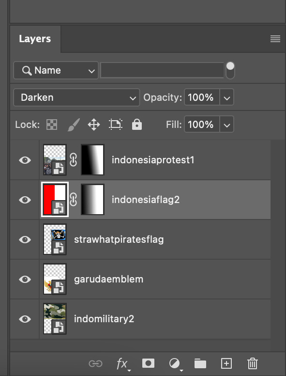
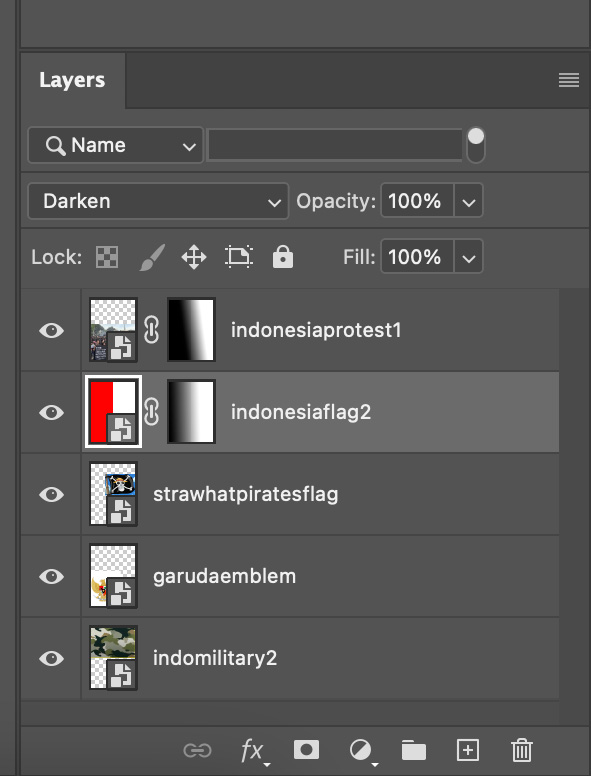

For my first collage I decided to focus on the uprising of protests in Indonesia. These protests have mainly been centered around the corruption in their government. Protests in Jakarta Indonesia started becoming more prevalent after August 25th, 2025. This date is important because on this day an innocent food delivery driver was run over by an armored police car after it drove through a group of protestors. My collage is made up of the Indonesian flag, the Garuda emblem, the military colors, and the straw hats pirate flag. The straw hats pirate flag is a reference to the manga/anime one piece where the main character is part of a crew called the straw hats. This is an important flag in these protests because like the anime, protestors are using this to symbolize what the main character Luffy stood for. In my collage I decided to utilize dissolve, gradients, and the darken blending mode.
I was really intrigued by the dissolve mode because I like the speckled effect it makes and it also shows part of the image that is underneath. I had a hard time trying to get all the images to be able to fit but by using dissolve I was able to get the group of protestors to show through. I wanted the Indonesia flag to not be the focal point but for it to still be shown somehow. I was able to achieve it through the gradient feature which allowed for the red and white to peek through onto the top photos. I also like the darken blending mode because it helped my picture to be seen a little better. Most of my photos are taken from articles about the protests, the Indonesian government instagram, and from searching on the web.
 
